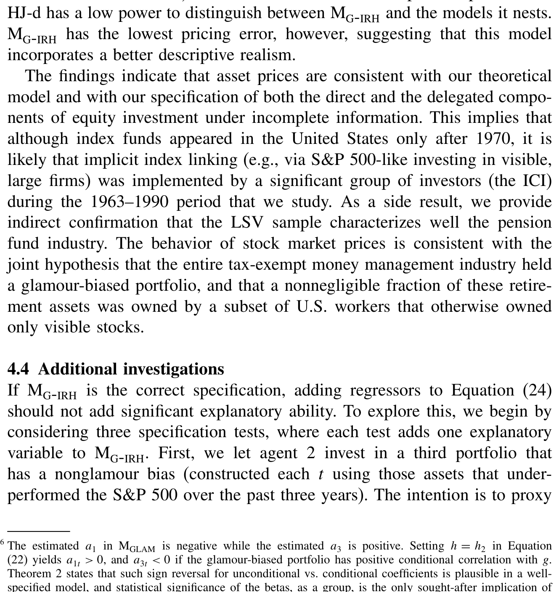
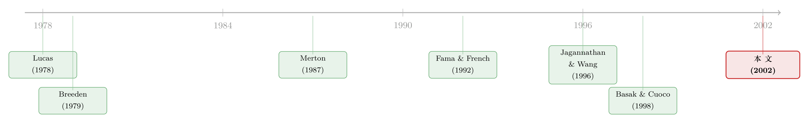

「我不认识的股票，凭什么不能更便宜？」
本文读的是 Shapiro (2002, Review of Financial Studies)：他把 Merton (1987) 那个静态、人人会背的「投资者认知假说」搬进了连续时间一般均衡，结果发现一条被静态直觉死死焊住的「常识」松动了——一只不太被认识的股票，它的风险溢价未必要高过一只更被认识、但波动更低的股票。把这个机制做成一个两 beta 的消费 CAPM，再摁到 Fama-French/Jagannathan-Wang 的横截面上，它能解释超过 55% 的平均收益变异。
1 一个静态世界里的「常识」
先讲一个几乎所有人都点头的故事。
Merton (1987) 提出过一个很朴素的假说：投资者只买他认识（recognize）的股票。没听说过的小公司、没在显眼交易所挂牌的、没人写研报的——它们干脆进不了你的投资组合。这就是 投资者认知假说 (investor recognition hypothesis, IRH)。它的实证支持这些年越攒越多：Falkenstein (1996) 从共同基金持仓里看到投资者对股票特征的明显偏好，Huberman (2001) 干脆把它总结成一句话——「熟悉滋生投资」（familiarity breeds investment）。
（关于「认识一只股票本身就是定价的一部分」，可参见《被「请」出市场的悲观者，藏在持股人数里》，那篇正是 Merton 这条线的实证延伸。）
而 Merton 用的是一个静态的均值-方差框架。在那个框架里，结论干净得让人放心：一只股票被越少人认识，承担它特质风险的人就越少，风险没法被充分分摊，于是它必须用更高的风险溢价来补偿。换句话说，可见度越低 → 溢价越高。再叠加一个常识——波动越高 → 溢价越高——你就得到一条几乎不需要证明的排序：那只「又不被认识、又更波动」的股票，溢价当然最高；那只「更被认识、又更平稳」的股票，溢价当然最低。
故事到这里都很顺。
接着，一个自然的问题是：这条排序，是「认知假说」本身的逻辑，还是「静态均值-方差」这个外壳强加给它的？静态世界里没有明天，投资者不必为「将来投资机会会变」操心——而我们知道，一旦把时间维度放回去，资产除了「自己有多险」，还会因为它能不能对冲未来投资机会的变动而被重新定价。Merton 自己在跨期 CAPM 里早就讲过这件事。
那么问题就来了：如果一只不被认识的股票，恰好是一个对冲未来风险的好工具呢？
2 把「不认识」搬进连续时间
这正是 Shapiro 要做的事。他把 IRH 从静态搬进连续时间一般均衡，并起了个名字叫 广义投资者认知假说 (generalized IRH, G-IRH)。
舞台是一个 Lucas (1978) 式的纯交换经济（pure-exchange economy）——经济里的产出是外生的红利流，价格内生地把市场出清。（这种「一棵树结多少果子是天定的，价格随人心而动」的设定，和《两棵树的寓言》是同一个家族。）不确定性由一个二维布朗运动 \(w(t)=(w_1(t),w_2(t))'\) 驱动。投资品有三种：一只零净供给的「债券」，赚瞬时利率 \(r\)；以及两只各供给一单位的「股票」，是对外生红利的索取权。
债券与股票的动态写成
$$ dB(t)=B(t)\,r(t)\,dt $$
$$ dS_j(t)=\big(S_j(t)\mu_j(t)-\delta_j(t)\big)\,dt+S_j(t)\sigma_j(t)\,dw(t),\quad j=1,2 $$
这里利率 \(r\)、漂移 \(\mu\)、波动矩阵 \(\sigma\) 都不是外生给定的，而是在均衡中内生决定——这是和静态模型最本质的区别。
经济里住着两类人。代理人 1（agent 1）不受任何约束，是要替市场出清的那个人；代理人 2（agent 2）则因为信息成本，只能执行一种特定的交易策略。两人都是时间可加的期望效用，
$$ U_i(c)=E\!\left[\int_0^T e^{-\rho t}u_i\big(c(t)\big)\,dt\right] $$
其中 \(\rho>0\) 是主观贴现率。关键的简化是：代理人 2 用对数效用 \(u_2(c)=\log c\)——这是带约束的连续时间文献几乎不可避免的假设（Basak and Cuoco, 1998 也是如此），目的是把代理人 2 的最优策略写成闭式。
那么，代理人 2 受的「约束」长什么样？这是全文的支点。Shapiro 不去显式建模信息成本，而是用一个投资组合约束把它「降维」表达：
$$ \theta_{21}(t)=q_1(t)\,\theta_{22}(t) $$
意思是，代理人 2 在股票 1 上的持仓，必须是他在股票 2 上持仓的某个比例 \(q_1(t)\)。这一族约束能装下好几种现实行为：
- \(q_1=\bar q\) 为常数，且 \(\bar q=0\)：代理人 2 干脆不碰股票 1——这正是 Merton (1987) 笔下「对股票 1 信息不足、于是不持有」的情形，也对应「某些投资者非得股票挂上 NYSE 这种显眼交易所才肯买」[Kadlec and McConnell (1994)]；
- \(0<\bar q<1\)：一种没那么极端的偏好，对应「在更熟悉的股票上下注更多」[Huberman (2001)]、偏好上市更久的股票 [Barry and Brown (1984)]，或国际/国内的 本土偏好（home bias）[Coval and Moskowitz (1999)]；
- \(q_1(t)=S_1(t)/S_2(t)\)：每只股票持有等量股数，于是代理人 2 实际上买的是市场组合的一份，单基金分离成立。
（「熟悉度如何挤进组合选择」这件事，《你不是在对冲，你在买你熟悉的东西》给了一份很对味的实证旁证。）
3 模型：当一类投资者只会买一只「基金」
现在把上面的约束翻译成一句话：代理人 2 在风险资产上的全部选择，被压缩成了一只基金。
Shapiro 给这只基金定义了一个价格过程 \(F\)——他直接管它叫 IRH 指数（IRH index）：
$$ dF(t)=F(t)\mu_F(t)\,dt+F(t)\sigma_F(t)\,dw(t) $$
其中，令 \(q(t)=(q_1(t),1)'\)，则
$$ \mu_F(t)=\frac{q(t)'\mu(t)}{q(t)'\bar 1},\qquad \sigma_F(t)=\frac{q(t)'\sigma(t)}{q(t)'\bar 1} $$
一个关键事实是 \(\mathrm{rank}\big(\sigma_F(t)\big)=1\)：虽然经济里有两个布朗运动，但代理人 2 的风险敞口只活在一维里。于是他的财富演化就退化成「债券 + 这一只基金」的二选一：
$$ dW_2(t)=\eta_2(t)\frac{dB(t)}{B(t)}+\big(W_2(t)-\eta_2(t)\big)\frac{dF(t)}{F(t)}-c_2(t)\,dt $$
代理人 2 只要「认识」 \(F\) 的动态，就不必再认识每一只个股的动态——这就是「投资者认知」四个字在数学上的落点：他面对的是一个不完全的市场。
那么这样一个被绑住手脚的人，怎么消费、怎么定价？这里 Shapiro 用了 Cvitanić and Karatzas (1992) 的凸对偶（convex duality）技巧：把「带约束的真实经济」等价成「一个虚拟的、无约束的经济」，代理人 2 在那个虚拟经济里面对一个独特的 状态价格密度（state-price density）\(\xi_2\)。对数效用让最优消费一步到位（命题 1）：
$$ c_2^*(t)=\frac{e^{-\rho t}}{\lambda_2\,\xi_2(t)},\qquad \lambda_2=\frac{1-e^{-\rho T}}{\rho\, b} $$
$$ \xi_2(t)=B(t)^{-1}\exp\!\left(-\int_0^t \kappa_2(s)'\,dw(s)-\tfrac12\int_0^t \|\kappa_2(s)\|^2\,ds\right) $$
剩下的全部玄机，都压在那个 \(\kappa_2\) 上。先写出无约束代理人面对的「风险的市场价格」（market price of risk）：\(\kappa(t)=\sigma(t)^{-1}\big(\mu(t)-r(t)\bar 1\big)\)。代理人 1 面对的就是它本身。而代理人 2 面对的，是把它投影到他那一维可投资空间上的影子：
其中 \(\Pi_F(t)=\sigma_F(t)'\big(\sigma_F(t)\sigma_F(t)'\big)^{-1}\sigma_F(t)\) 是投影矩阵。直觉是这样的：代理人 2 没法对所有风险源下注，他只能在 \(F\) 这一根「轴」上承担风险；于是他给未来消费定价时用的，不是完整的风险价格 \(\kappa\)，而是 \(\kappa\) 在这根轴上的投影 \(\Pi_F\kappa\)。被他丢掉的那一截，由「影子价格」过程
$$ \nu(t)=-\,\sigma(t)\,\Pi_F^{\perp}(t)\,\kappa(t),\qquad \Pi_F^{\perp}(t)=I-\Pi_F(t) $$
来记账——它正是虚拟经济里，要把约束「定价」出来所需的那一项漂移修正。
到这里，模型的骨架就立起来了：代理人 1 被迫吞下代理人 2 不愿、也不能持有的那部分风险，于是均衡的利率与风险溢价，必须同时为「市场出清」和「这种特殊的不完全性」买单。
4 反转：不可见的股票，未必要更高的溢价
把这套均衡求出来，Shapiro 得到三个结果，但真正让人坐直的是其中一个。
第一，在 G-IRH 下，风险溢价有了一个两 beta 的消费 CAPM（CCAPM）刻画。第一个 beta，就是 Breeden (1979) 那个经典的、对总消费变动的 beta；但因为代理人 2 的投资机会集被降了维，溢价里多出第二项，它反映 IRH 指数的张成性质，并且随每只资产对 IRH 指数的 beta 而变。
第二，利率的动态被改写了：它现在还要依赖 IRH 指数的波动率。于是有两个波动源在推动利率——红利的外生波动，和收益的内生波动。这是静态模型，乃至那些把波动率外生固定的连续时间模型（如 Sellin and Werner, 1993）结构上无法产生的。
第三，也是反转所在。聚焦到纯 IRH（pure IRH, P-IRH，即代理人 2 完全不碰某只股票）的情形，静态均值-方差关于「约束如何影响横截面溢价」的结论，在这里不成立了。用 Shapiro 自己的话：
一只不太被认识的股票，它的风险溢价未必要高过一只更被认识、但波动率更低的股票——其他条件相同。
为什么？因为一只风险无法被分摊的资产，仍然可能是一个对冲投资机会变动的好工具。静态世界把这条对冲价值整个抹掉了，于是它只看见「风险没人分 → 要补偿」这半边；一旦把时间放回来，另半边——「它能帮你对冲将来」——就回来了，两股力量可以互相抵消甚至反号。
这对一支正在生长的实证文献意义重大：研究公司把股票转到更显眼交易所、或跨境到美国上市的那批文章 [Kadlec and McConnell (1994); Foerster and Karolyi (1999)]，长期都默认「可见度上升 → 溢价下降」。Shapiro 的模型提醒他们：这条因果在动态均衡里不是恒等式。（这也正是《把股票挂到美国去，交易真的会跟过去吗？》那一类「跨境可见度」研究绕不开的理论底色。）
顺带一提，这也和「有限参与到底重不重要」的争论相通——《谁被挡在股市门外，并不重要》从另一个角度提醒我们，「谁被挡在外面」对均衡溢价的贡献，远不如静态直觉以为的那样一目了然。
5 实证：把模型摁到 Fama-French 的横截面上
理论再漂亮，也得见数据。Shapiro 把模型摁到了一个所有人都熟悉的横截面上：Fama and French (1992) 设计、后被 Jagannathan and Wang (1996, 下称 JW) 反复检验的那组投资组合。他自己也觉得意外——这么经典的一组横截面，居然一直没人在「CAPM 大辩论」之外拿它试过别的模型。
按照本文的前提，IRH 指数的收益由两个代理变量的组合来度量：
- 第一个代理，遵循 Merton (1987) 的论证，代表大公司；
- 第二个代理，意在捕捉投进养老金那部分财富的收益——养老金在样本期末已占美股 25% 以上 [Lakonishok, Shleifer, and Vishny (1992)]。据此，第二个代理被取为一个偏向过去业绩好的股票的组合，与 Lakonishok, Shleifer, and Vishny (1997) 对养老金行业「追逐赢家」的刻画一致。
计量上是 两阶段横截面回归（two-pass cross-sectional regression），OLS 与 GLS 都跑，设计借自 Shanken (1992) 和 JW；再用 Hansen and Jagannathan (1997) 距离检验设定，并用有限样本似然比检验来看模型对「无条件切点组合」构成的含义。
结论相当硬气：在 Fama-French (1992)/JW 样本覆盖的区间里，数据未能拒绝「本文前提 + 本文模型」的联合有效性；被 IRH 增强的 CCAPM，在各项准则下都优于其他对手模型，能解释平均实际月度与季度收益横截面变异的超过 55%。如表 2 所示，无论按哪一种标准衡量，IRH 增强的设定都是赢家。

Table 2: reports results for M - . The main result is that, by all criteria
6 文献脉络
把这条线捋一捋，你会看见两条河在 2002 年汇流。
一条是一般均衡资产定价的主干：Lucas (1978) 给出纯交换经济的定价范式，Breeden (1979) 把它落成消费 CAPM——风险溢价由对总消费的 beta 决定。这条河很美，但在横截面上一直「理论强、实证弱」。

另一条是摩擦与不完全市场：Merton (1987) 用静态均值-方差给「信息不完全」起了名字——投资者认知假说；与此并行，国际/国内市场分割的文献 [Errunza and Losq (1985); Levy (1978)] 在讲同一件事的不同方言。真正把「约束」请进连续时间一般均衡的，是 Basak and Cuoco (1998)——但他们只有一只风险资产，于是讲不了横截面。
Shapiro (2002) 站的正是这两条河的交汇处：他承接 Basak-Cuoco 的方法骨架（对数效用的受限代理人 + 凸对偶），但放进多只风险资产和更灵活的约束，于是第一次能从这套机制里导出横截面含义，并把它写成一个可被 Fama-French (1992)/JW (1996) 检验的两 beta CCAPM。它既是 Merton 的动态化，也是 Breeden 的「加料版」。
7 评论与延伸（Q&A + 研究方向）
(a) 几个可能的疑问
Q：G-IRH 和「分割市场 / 有限参与」到底有什么不一样？
形式上，P-IRH（代理人 2 完全不碰某股）确实和「分割市场」「受限参与」是一回事——文中也明说 P-IRH 与市场分割重合。但 G-IRH 更宽：它允许约束随机演化（\(q_1(t)\) 可以跟着资产价格动），所以能装下本土偏好、追逐赢家这类「部分、且会变」的行为，而不只是「持有 / 不持有」的二元开关。
Q：那条「不可见股票未必溢价更高」的反转，是不是靠某个特殊参数硬凑出来的？
不是凑出来的，是机制性的：它来自资产的对冲价值（对投资机会变动的对冲），这一项在静态均值-方差里被结构性地抹掉了。只要模型是真正跨期的，这一项就存在；它能不能压倒「风险无法分摊」那一项，才取决于参数。Shapiro 的贡献是证明了「反号」在均衡里是可能的，从而推翻了静态结论的「必然性」。
Q：为什么非得让受限的代理人用对数效用？这会不会把结论做窄了？
对数效用是连续时间带约束文献的「行规」（Basak-Cuoco 等几乎无一例外），因为它让最优消费/组合有闭式、且让代表性代理人的构造可解。代价是把代理人 2 的跨期对冲需求人为压平了（log 投资者短视）。所以真正的对冲价值其实主要来自代理人 1 被迫承接的敞口，以及均衡的内生波动——而非代理人 2 自己的择时。这是结论的一个边界，而非漏洞。
Q：实证里那个「偏向过去赢家的组合」当养老金代理，会不会其实是在偷偷塞进一个动量因子？
这是最该担心的一点。第二个代理在构造上就是一个「追涨」组合，它和动量、和 Fama-French 因子都可能相关。所以「IRH 增强 CCAPM 解释了 55%」里，有多少是机制、有多少是因子的伪装，单从拟合优度看不清——需要看它在控制了已知因子之后是否仍有增量解释力。文中用 HJ 距离和似然比检验做了设定层面的把关，但代理变量的「身份」问题，是它最容易被质疑的接口。
Q：利率依赖 IRH 指数波动率，这个预测可检验吗？
原则上可检验，但很难干净识别：它要求你能把利率波动分解成红利（外生）与收益（内生）两部分，而后者本身就难观测。这是模型给出的一个真预测，却也是最难拿数据对质的那一个。
Q：这套结论对「跨境上市能降低资本成本」的政策含义是什么？
它泼了一盆温水：把股票挂到更显眼的交易所、提高可见度，未必等比例降低其要求回报，因为这只股票原本可能正承担着某种对冲价值。换言之，「提升可见度 → 降低融资成本」是个需要识别、而非默认成立的因果。
(b) 几个可能的研究问题与提案
1. 把 IRH 搬到公司债的横截面。 【经济故事】债券投资者的「认知」摩擦比股票更重——评级门槛、144A 私募、做市商覆盖，决定了一只债「被谁认识」。如果不可见债的溢价里也混着对冲价值，那么「流动性溢价」可能被高估了。 【可行性】中。数据可用（TRACE + Mergent FISD），但要把「认知 / 可见度」操作化（覆盖该券的交易商数、是否纳入主流指数），且需和流动性度量正交化，识别不易。
2. 用一次「可见度冲击」做准自然实验，检验反转。 【经济故事】指数纳入、上调评级、或纳入央行合格抵押品清单，都是外生抬升「认知」的事件。模型预测：可见度上升后，溢价的变化方向取决于该资产的对冲 beta，而非单调下降。 【可行性】中高。事件研究框架成熟（DiD / 事件窗），关键是事前估出每只资产对「IRH 指数」的 beta，再看溢价变化是否随 beta 异号——这正是把 Shapiro 的横截面预测做成可证伪假设的办法。
3. 外资持有人作为「受限代理人」的实证对应物。 【经济故事】外资常因信息成本只买大盘、高知名度的本地股——这几乎是 G-IRH 里代理人 2 的现实化身。可投资度（investibility）的变化，相当于约束 \(q_1(t)\) 的外生移动。 【可行性】高。可投资度数据可得，且有现成的「外资可买性」自然实验（参见《外资真是「蝗虫」吗？》与《外资能买的股票，为什么更「抖」？》的设定），适合直接对接本文的两 beta 含义。
4. 放松对数效用，量化对冲需求被压平了多少。 【经济故事】把代理人 2 换成 Epstein-Zin 偏好，看「反转」结论是被强化还是被削弱——这能告诉我们 Shapiro 的结论里有多少依赖那条技术性假设。 【可行性】低到中。闭式解大概率丢失，要靠数值/投影方法求均衡，工程量大，但能直接回应本文最大的理论边界。
我的判断
这篇论文的贡献，不在于「又拟合了横截面」，而在于它拆穿了一条被静态外壳伪装成铁律的直觉。「不可见 → 高溢价」听上去天经地义，可它其实是均值-方差那个没有明天的世界悄悄塞进来的。Shapiro 用一个干净的连续时间均衡，把对冲价值这一项请了回来，于是那条排序失去了「必然性」——这是真正的理论增量，比 55% 的 \(R^2\) 更值得记住。
我对识别最大的保留，仍是那个养老金代理变量：一个按「过去赢家」构造的组合，太容易和动量、和已有因子撞车，使得「机制 vs. 因子伪装」难以分辨；HJ 距离和似然比能管设定，却管不住代理变量的身份。这意味着实证那一节更像是「模型与数据不矛盾」的证据，而非「机制被点亮」的证据。
接下来我最想看到的，是把这套两 beta 含义做成可证伪的横截面假设：先估出每只资产对 IRH 指数的对冲 beta，再用一次外生的可见度冲击，去检验溢价的变化方向是否真的随 beta 异号。如果异号成立，那才是对「反转」机制最有力的实证背书；而公司债与外资持有人，恰是检验它最自然的两个实验场。
参考文献
Barry, C. B., and S. J. Brown (1984). Differential Information and the Small Firm Effect. Journal of Financial Economics 13(2), 283–294.
Basak, S., and D. Cuoco (1998). An Equilibrium Model with Restricted Stock Market Participation. Review of Financial Studies 11(2), 309–341.
Breeden, D. T. (1979). An Intertemporal Asset Pricing Model with Stochastic Consumption and Investment Opportunities. Journal of Financial Economics 7(3), 265–296.
Coval, J. D., and T. J. Moskowitz (1999). Home Bias at Home: Local Equity Preference in Domestic Portfolios. Journal of Finance 54(6), 2045–2073.
Cvitanić, J., and I. Karatzas (1992). Convex Duality in Constrained Portfolio Optimization. Annals of Applied Probability 2(4), 767–818.
Falkenstein, E. G. (1996). Preferences for Stock Characteristics as Revealed by Mutual Fund Portfolio Holdings. Journal of Finance 51(1), 111–135.
Fama, E. F., and K. R. French (1992). The Cross-Section of Expected Stock Returns. Journal of Finance 47(2), 427–465.
Foerster, S. R., and G. A. Karolyi (1999). The Effects of Market Segmentation and Illiquidity on Asset Prices: Evidence from Foreign Stocks Listing in the United States. Journal of Finance 54(3), 981–1013.
Hansen, L. P., and R. Jagannathan (1997). Assessing Specification Errors in Stochastic Discount Factor Models. Journal of Finance 52(2), 557–590.
Huberman, G. (2001). Familiarity Breeds Investment. Review of Financial Studies 14(3), 659–680.
Jagannathan, R., and Z. Wang (1996). The Conditional CAPM and the Cross-Section of Expected Returns. Journal of Finance 51(1), 3–53.
Kadlec, G. B., and J. J. McConnell (1994). The Effect of Market Segmentation and Illiquidity on Asset Prices: Evidence from Exchange Listing. Journal of Finance 49(2), 611–636.
Lakonishok, J., A. Shleifer, and R. W. Vishny (1992). The Structure and Performance of the Money Management Industry. Brookings Papers: Microeconomics, 339–391.
Lucas, R. E. (1978). Asset Prices in an Exchange Economy. Econometrica 46(6), 1429–1445.
Merton, R. C. (1987). A Simple Model of Capital Market Equilibrium with Incomplete Information. Journal of Finance 42(3), 483–510.
Shanken, J. (1992). On the Estimation of Beta-Pricing Models. Review of Financial Studies 5(1), 1–33.
Shapiro, A. (2002). The Investor Recognition Hypothesis in a Dynamic General Equilibrium: Theory and Evidence. Review of Financial Studies 15(1), 97–141.